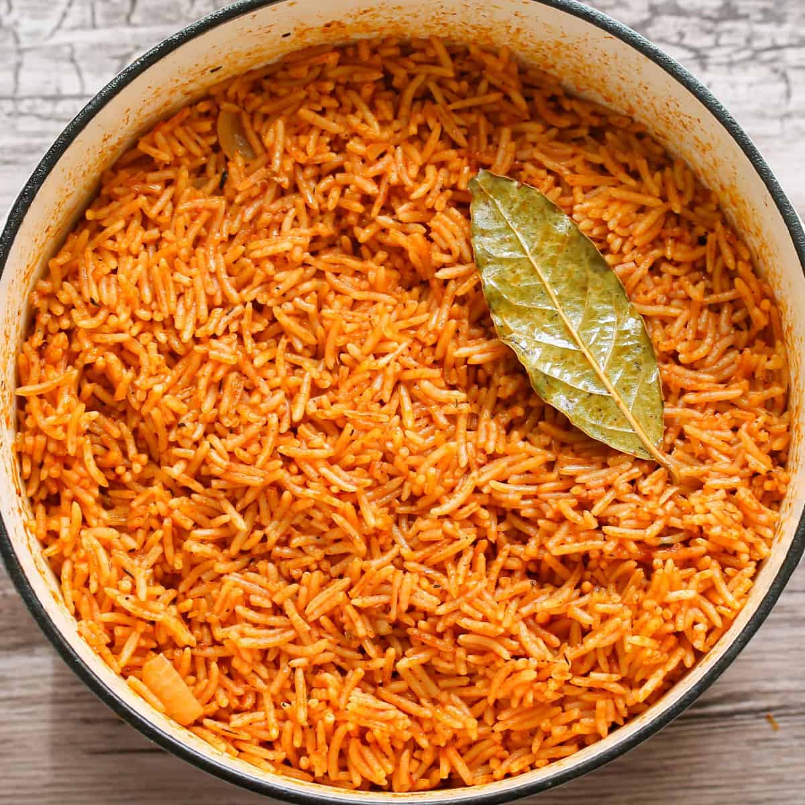

Jollof Rice

Jollof is as Nigerian as the "Green-White-Green" color of the Nigerian
flag. This dish combines the Nigerian flavour with rice for a delicious
experience. It is best enjoyed with fried fish, chicken or turkey and your
favourite cold beverage.
Ingredients
- 2 cups of rice.
- 6 tsp of of Soya oil
- 2 raw eggs
- 1 tsp Soy sauce
- 1 tsp ground black pepper
- 2 tsp sweet corn
- Spring onions
Steps
-
Boil 2 cups of rice for 15 mins and set it aside. You can either leave
it wholesome or crunchy, depending on your preference.
- Beat up the eggs.
-
Pour 2 tsp of Soya oil into a wok/frying pan, allow it heat up for 3
mins before pouring the beaten up egg into it until it scrambles.
-
Pour 2 tsp of Soya oil into a wok/frying pan, allow it heat up for 3
mins before pouring in the chopped spring onions and sweet corn.
- Add cooked rice and continue stir frying.
- Pour in seasoning.
- Pour in scrambled egg and stir fry for 2 mins. Bring it down.
-
Serve with any protein of your choice and your favourite cold beverage.